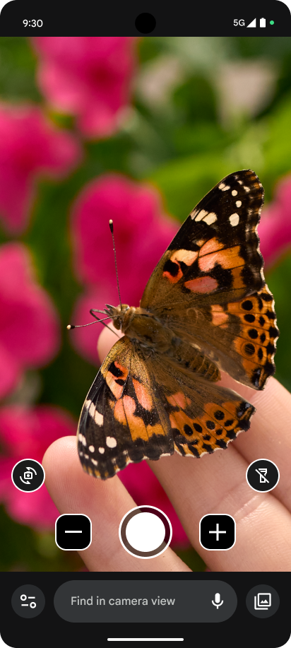
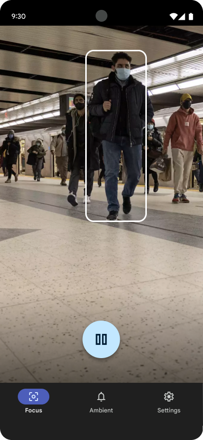

Experienced product designer making an impact in AgeTech.
As a staff UX designer who has shaped market-defining products at Google, Microsoft, and Motorola, I specialize in mobile UX and accessible design, applying my skills to solve meaningful challenges for older adults and people with disabilities.
Core Expertise
Mobile & Hardware UX
Designing intuitive interactions for phones, smart speakers, and complex hardware systems at global scale.
Inclusive Design
Creating accessible, empowering tools for low-vision users and older adults that go beyond compliance.
Systems Thinking
Translating complex technical capabilities into simple, consistent mental models and non-verbal languages.
Selected Work
Pixel Magnifier
I led the redesign of the Magnifier feature, transforming it from a basic utility into a highly-rated, accessible tool for users with low vision.


Simple View
To help older adults in Japan adopt smartphones, I designed a feature that simplifies the core phone experience, achieving an 80% conversion rate.
Guided Step
I led the design for 'Guided Step,' uncovering foundational insights into how blind users navigate crowded spaces via global co-design.

Additional Experience
Google Home Lights System
Skill: Systems Thinking & Simplicity
Pioneered the 4-dot non-verbal language for 25M+ screenless devices.
Calling on Assistant
Skill: Voice UX & Product Strategy
Led a strategic pivot to P2P calling, driving 1.5M+ calls/month.
About Me
I'm a staff UX designer with deep expertise in shipping hardware and software at world-class tech companies. I specialize in mobile UX and accessible design, applying my skills to solve meaningful challenges and create best-in-class experiences for older adults.